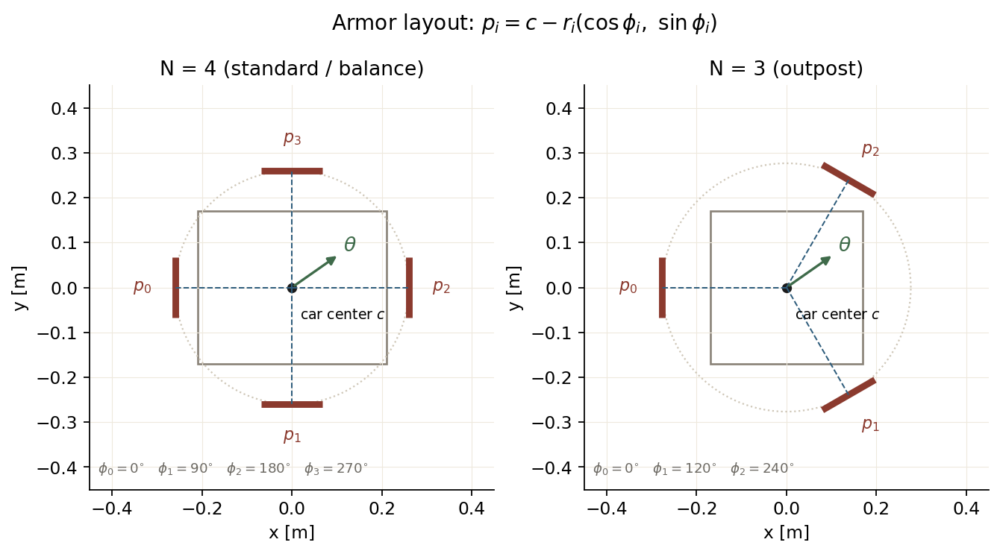
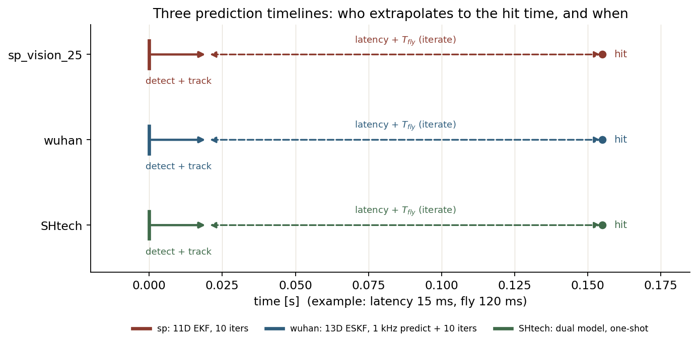

Lesson 0004 · 项目线
这一节把前面的 KF/PnP 拼成完整链路，对照 sp_vision_25、wuhan、SHtech 三套代码：它们都在估同一辆车，只是“状态怎么摆、观测怎么量、时间怎么推”不同。
三套代码都假设目标是一个刚体，4 块（前哨站 3 块）装甲板按固定角度分布：
p_i = c + R(θ) · ( -r_i cosφ_i, -r_i sinφ_i, Δz_i ) φ_i = i · 2π / N

p_i 在车心到装甲板的方向上取负号，是因为 θ 定义为“装甲板朝向车心”的方向；不同代码的符号约定略有差异，读代码时要先确认。图由 assets/make_course_figures.py 生成。| 项目 | 状态 | 维数 | 姿态 | 速度的含义 |
|---|---|---|---|---|
| sp | [x,vx,y,vy,z,vz,θ,ω,r,l,h] | 11 | 单 yaw | 相对云台（世界原点在云台） |
| wuhan | [cx,vcx,cy,vcy,cz,vcz,rot_z,ω,log r1,log r2,h,rot_y,rot_x] | 13 | SO(3) | 绝对 odom；瞄准前减云台速度 |
| SHtech | [y,vy,x,vx,z,vz,θ,ω,r,l,h] | 11 | 单 yaw | 相对 IMU（世界原点在 IMU） |
注意 SHtech 的状态顺序是 y 在前，不是 x 在前。这不是小事：它的 H 矩阵列顺序、R 的 XY 块都跟着这个顺序走。

t_hit = t_now + latency + T_fly，但 sp/wuhan 用不动点迭代，SHtech 只算一次。图由 assets/make_course_figures.py 生成。把时间轴拆开看：
sp: frame t_k → track(t_k) → t_now → +delay → t_fire → +T_fly(iterate) → t_hit wuhan: frame t_k → track → buffer → 1kHz predict(t_now) → +T_fly(iterate)+delay → t_hit SHtech: frame t_k → track → t_now → +(now-t_k)+latency+T_fly(one shot) → t_hit
“迭代”不是强迫症：T_fly 取决于命中点，命中点又取决于 T_fly。目标横向速度 4 m/s 时，一次近似可能差几厘米；迭代 2–3 次就收敛到毫米级。
观测 z = [ atan2(y,x), atan2(z,√(x²+y²)), √(x²+y²+z²), θ_i ] H = blkdiag(J_ypd, 1) · J_geom J_geom 的非零块： ∂p/∂c = I ∂p/∂θ = ( r sinθ, -r cosθ, 0 ) ∂p/∂r = ( -cosθ, -sinθ, 0 ) ∂p/∂l = ( -cosθ, -sinθ, 0 ) (仅 i=1,3) ∂p/∂h = ( 0, 0, 1 ) (仅 i=1,3)
它的更新是标准 EKF：在 x⁻ 处解析线性化，一次更新。优点是快、可解释；缺点是 PnP 的深度/姿态噪声直接进滤波器，靠经验 R 压。
代码：target.cpp:187（update）、target.cpp:280（H）、aimer.cpp:32（预测+不动点）。
状态 x = [c, v, rot(3), ω, log r1, log r2, h] 预测： c ← c + v dt R ← R · Exp([0,0,ω dt]) 观测（每条灯条 4 维）： T_armor = T_car · T_armor_in_car u = π(K, D, T_cam⁻¹ T_armor P) z = [ atan2(Δu_x, Δu_y), center_x, center_y, ||Δu|| ]
它不在 PnP 位姿上滤波，而是把“当前状态下的装甲板灯条应该投到哪”和“实际检测到的灯条端点”做残差。好处是：单灯条也能用、不被 PnP 深度噪声带偏；坏处是：投影非线性强，H 只能数值求，计算量大。
更新是批量的：一帧里所有装甲板 × 两条灯条 + 单板深度差，拼成一个大的 z/h/H/R，迭代 5 次。姿态用右乘注入：R ← R·Exp(δθ)。
代码：motion_model.hpp:181（预测）、:260（UVL 观测）、armor_target.cpp:345（更新）、very_aimer.cpp:224（命中点）。
装甲板模型：4 个独立 2D KF state = [p, v] A = [[1,dt],[0,1]], H=[1,0] Q = q [[dt⁴/4, dt³/2],[dt³/2, dt²]] 整车模型：11 维 IESEKF x = [y,vy,x,vx,z,vz,θ,ω,r,l,h] z = [y_a,x_a,z_a,θ_a] H 由 ∂p/∂c、∂p/∂θ、∂p/∂r、∂p/∂l、∂p/∂h 组成
它按 |ω| 分三档：
|ω| < 0.7 → 装甲板模型（低速平移） 0.7 ≤ |ω| ≤ 2.7 → 两套都更新（过渡） |ω| > 2.7 → 整车模型（高速旋转）
低速时整车模型对“只平移不旋转”不敏感，容易把平移误估成旋转；高速时装甲板模型又跟不上换板。双模型 + 迟滞是最工程化的折中。
代码：Tracker.cpp:106（track）、:578（EKF 初始化）、:887（模型选择）、Planner.cpp:109（4 种策略）。
球坐标的 [yaw,pitch,d] 与“云台要转多少”直接对应，弹道解算只需要 d 和 z；直角坐标的 H 更简单，R 的各向异性也更容易用 u_r/u_t 构造。两者没有绝对优劣，取决于你更想让哪一段“线性”。
因为 PnP 在远距离、斜视角、单板遮挡时深度/姿态噪声很大。图像残差是“传感器原始测量”，不会把 PnP 的错误先验放大；代价是投影模型非线性、计算重。
因为“整车旋转模型”和“装甲板平移模型”的适用区间不同。用一个模型硬扛全速度段，必然在某一端翻车；两套模型 + 切换，是把“模型选择”显式化。
1. 哪套代码的状态包含完整 SO(3) 姿态？
2. 哪套代码的观测不是 PnP 位姿，而是灯条端点的图像投影？
3. 哪套代码按 |ω| 在“装甲板模型/整车模型”之间切换？